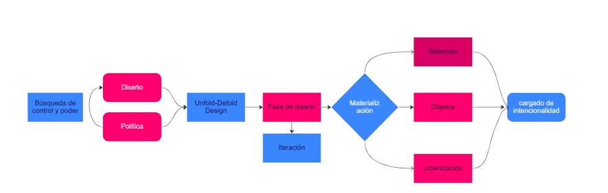

Articulo:

Sobre el proyecto:
Autor:
En que consiste:
“Laser Tag”. Proyecto perteneciente al grupo creado en colaboración de Evan Roth y James Powderly, Graffiti research Lab, que se caracteriza por tratar de hacer asequible sus tecnologías experimentales hacia el público general. Consiste en la proyección de elementos hacia edificios, emulando un estilo similar al graffiti, en una mayor escala y una duración efímera. Fomenta la comunicación urbana, al incluir palabras de un sin fin de artistas, permitiéndoles dar a conocer sus mensajes y opiniones políticas. De una forma la cual no afecta materialmente el área a intervenir . Cómo sería un graffiti “de Verdad'', el cual lleva pintura.
”Laser Tag'' tampoco se queda atrás, y viene con sus propias instrucciones descargables, para una fabricación a menor escala y casera.
Cabe destacar además, que uno de los fundadores, Evan, viene de lleno trabajando con esta clase de tecnología desde hace un tiempo. Siendo sus proyectos y exposiciones centradas en la proyección y construcción de ambientes usando luces y pantallas, ambos de led.